※这篇文章也请AI（Claude 3.5 sonnet）帮忙制作，再由我部分自行补写更新哈哈
2024年10月吃的😄
这次要介绍的是位于那霸市前岛的「冲绳面处丸面 Tomarin店」。
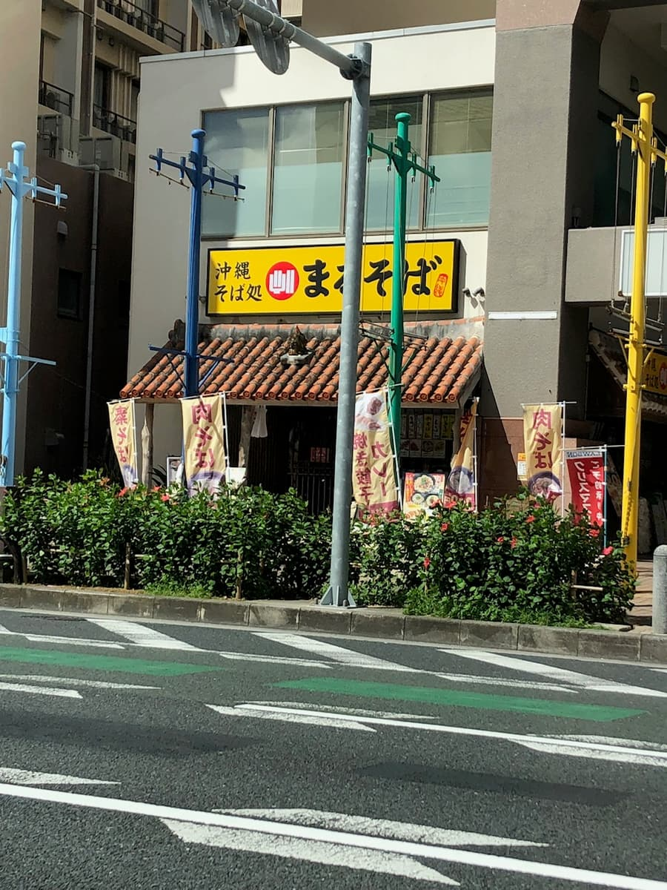
店门口竖立的旗帜上「肉面」两个字映入眼帘，因为好奇就进店了😆
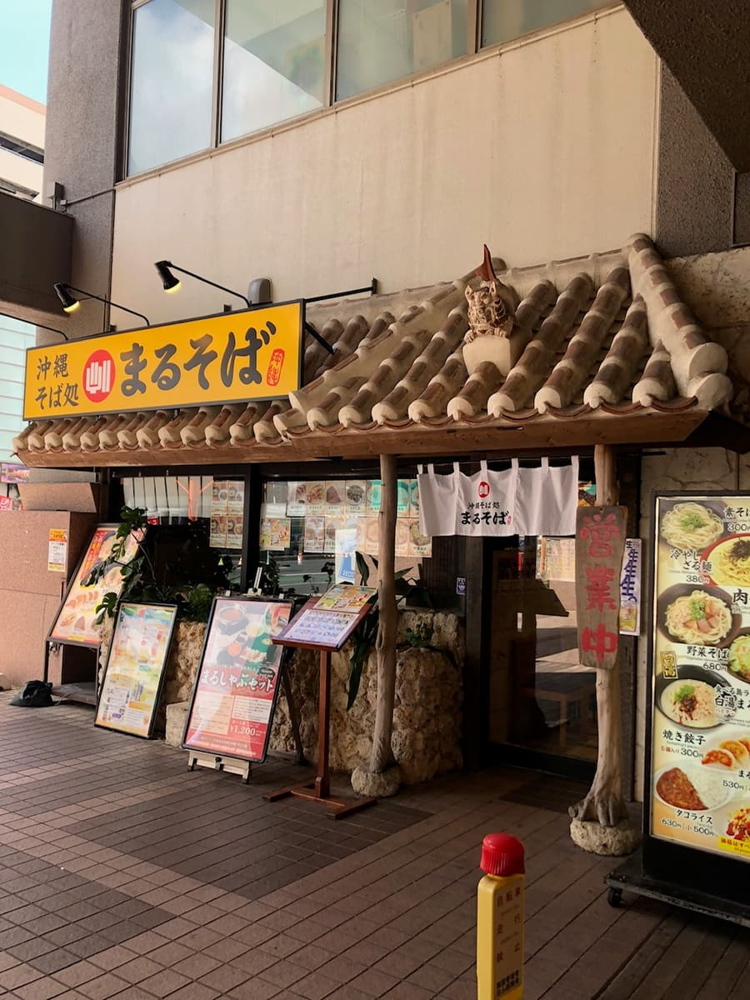
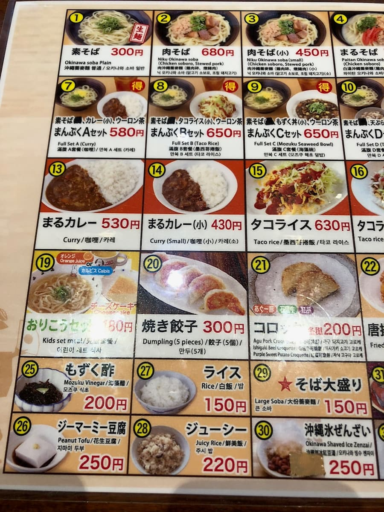
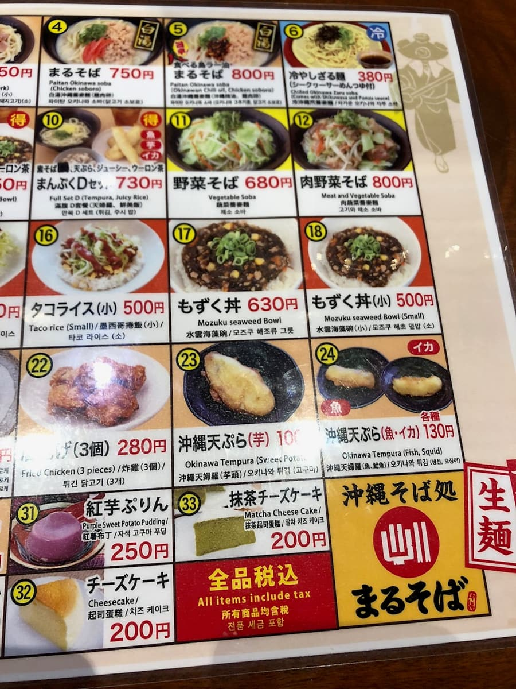
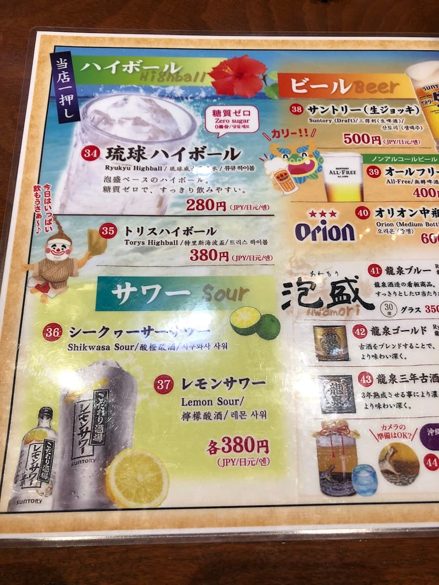
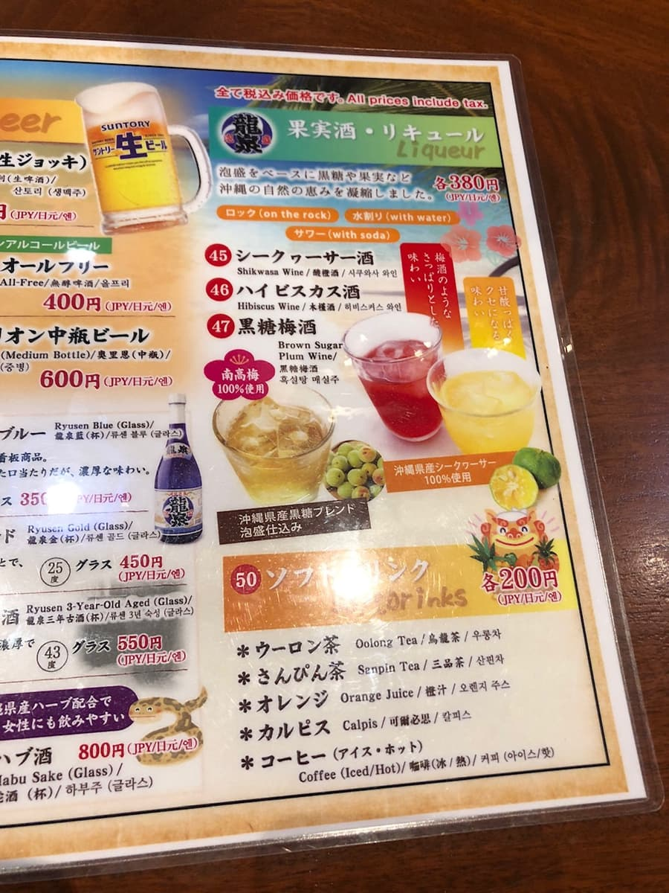
看菜单，除了一般的冲绳面之外，还有咖哩和塔可饭等丰富的餐点。这次点了目标的「肉面」😊
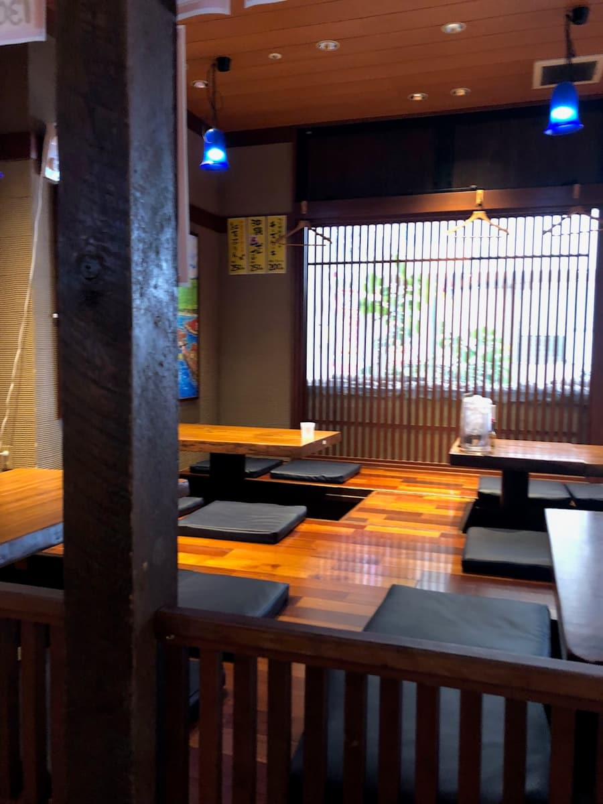
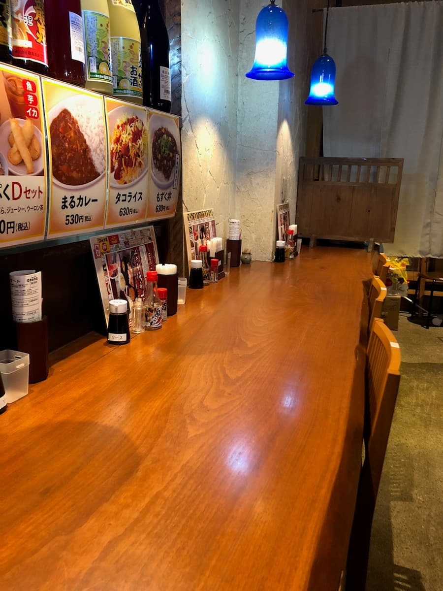
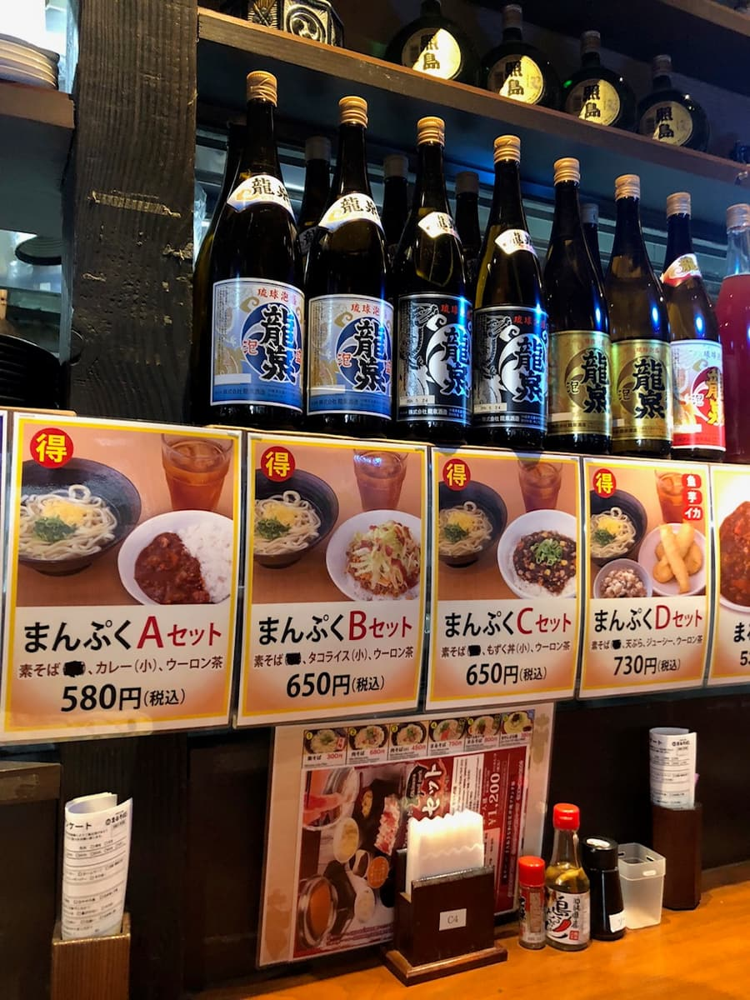
店内是木纹调的沉稳气氛，有柜台座位和桌位，是个舒适的空间呢。
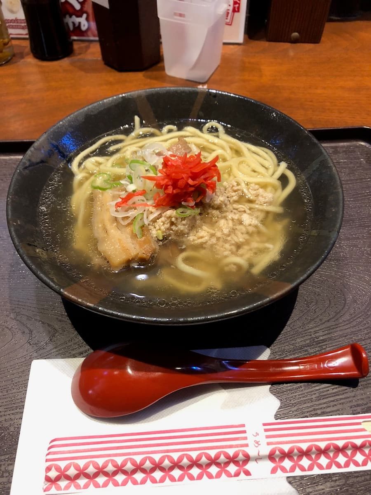
「肉面」来了😄 先照例品尝汤头吧。与其他店常见的猪骨或柴鱼高汤不同，是透明度高的汤头很有特色。感觉比较像是以鸡高汤为底？是温和的味道，普通好吃呢😋
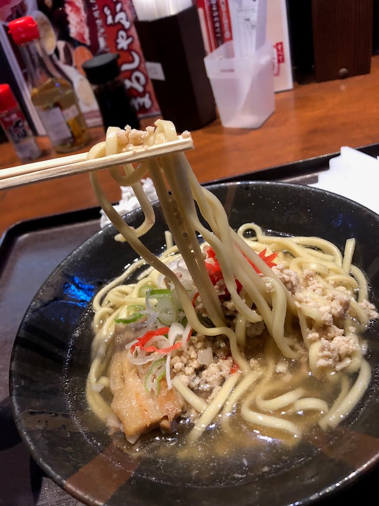
面条是使用生面的中粗直面。有适度的嚼劲，吃起来很有份量。配料除了一般的三层肉，还放了肉燥，这是其他店没有的特色。不过，三层肉还留着一点筋感（口感偏韧）让我有点在意。
评分（9分/15分）：汤头是与其他店不同、有透明感的温和味道，使用两种肉也能感受到巧思。不过整体印象是普通好吃。到那霸市区的时候，要不要顺道来一次看看呢？😊
面：★★★☆☆（3）
汤头：★★★☆☆（3）
配料：★★★☆☆（3）